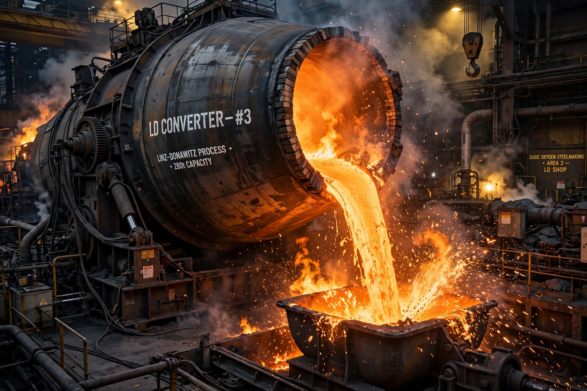

Basic oxygen steelmaking (BOS), also known as Linz-Donawitz steelmaking, is a method of primary steelmaking in which carbon-rich molten pig iron is made into steel by blowing oxygen through a lance over the molten iron.

Oxygen oxidises carbon and impurities; lime flux removes them as slag. The exothermic reactions keep the charge molten without external fuel. A heat takes about 40 minutes in vessels holding up to 400 tonnes. BOS accounts for roughly 70% of world steel production.
Developed in Linz and Donawitz, Austria, around 1952–53, it superseded the open hearth furnace.